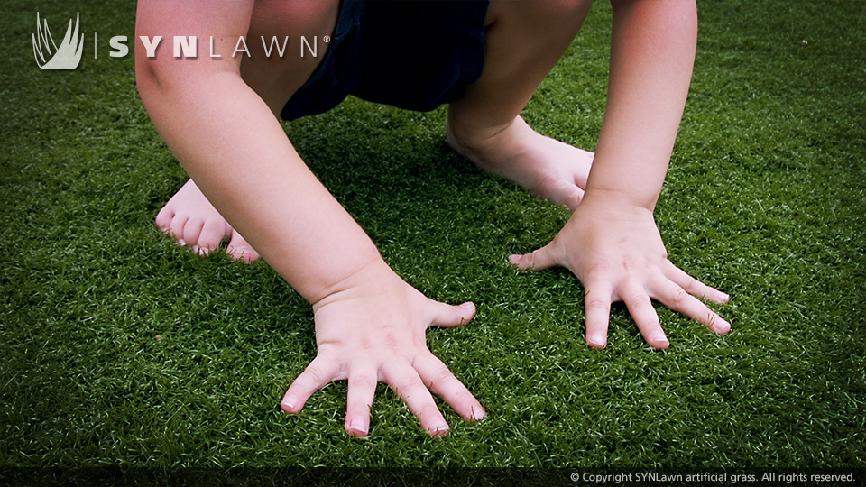
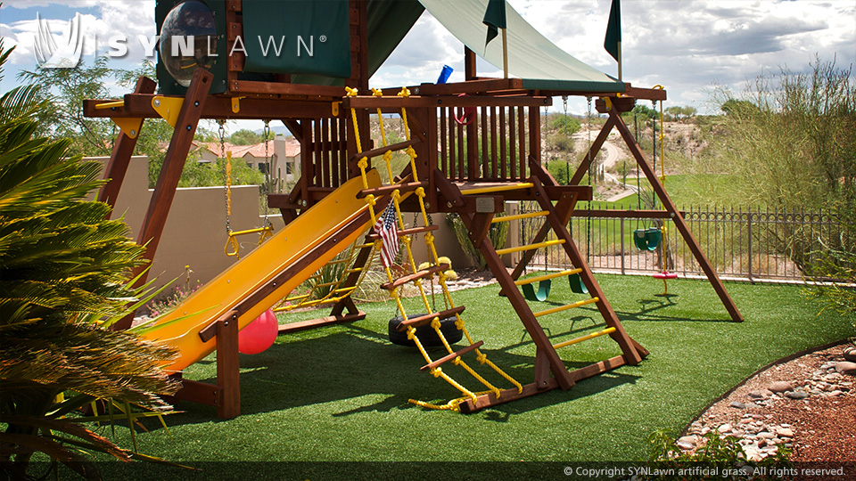
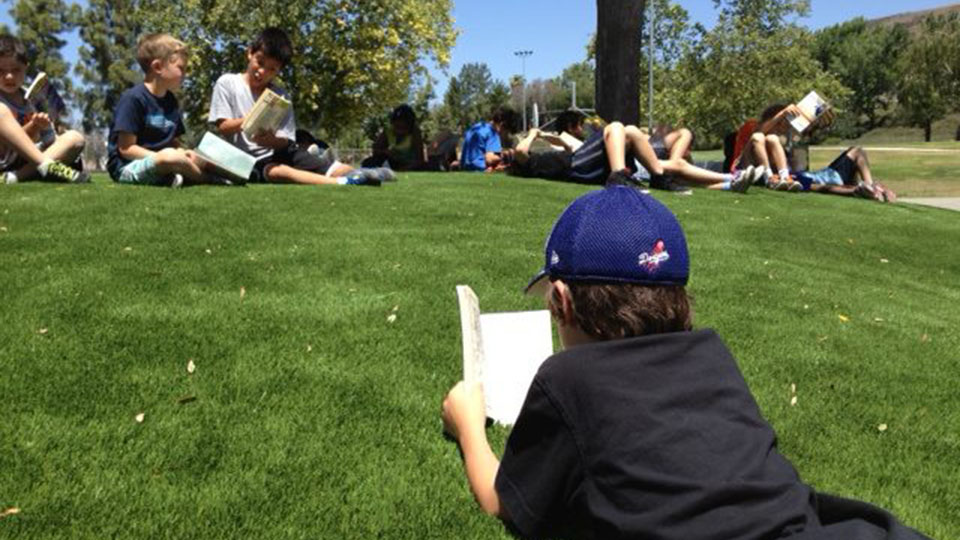

When it comes to your kids, nothing is more important than their safety. When it comes to selecting the perfect play set, safety is always your number one concern. After selecting your kids’ play set, consider the playground surface underneath. What is underneath the playground surface is just as imporant as what is on top.
Most injuries on playgrounds occur as the result of a fall on surfaces that are abrasive, hard or just plain unsafe. That’s where the SYNLawn Playground System comes in. We’ve developed the safest, most consistent playground surface anywhere. Our system is designed for all types of playground equipment and protects children from falls as high as 10-feet which meets IPEMA standards of citical fall height (CFH) rating and CSA approved fall attenuation.
There are many options available for playground surfaces. Mulch, pea gravel, rubber, and other artificial turf products have been used for playgrounds. However, when it comes to your children’s safety and enjoyment, none of those systems can compare to the SYNLawn Playground System.
Traditional options often fall short when it comes to consistent and lasting safety protection. Surfaces constructed of mulch, gravel or sand can have a rapidly degrading safety level if not maintained frequently. High foot traffic areas such as those circling the merry-go-rounds, under the swings or at the landing of a slide tend to displace the material exposing the hard ground underneath.
While rubber surface playgrounds do offer more consistent protection they do raise a host of concerns. In the summer rubber absorbs heat and can create a very hot or unplayable surface during the peak hours of recess. In the winter rubber becomes hard and brittle from the cold which compromises the integrity of the protection it offers.
The SYNLawn Playground System offers consistent, low maintenance and lasting safety integrity in high traffic areas, in any weather, at required heights, and under all types of play equipment. On top of it all, you and your children can enjoy the look and feel of beautiful green grass
♦ ASTM tested and IPEMA certified
♦ ASTM HIC approved tested
♦ Non abrasive
♦ SYNLawn is soft to the touch and easy on the skin
♦ No grass stains
♦ Kids stay clean and out of trouble when mom goes to wash their clothes
♦ Non-allergenic
♦ Happier healthier kids - allergies caused by natural grass are a thing of the past
♦ Superior drainage
♦ SYNLawn drains at a rate of 30-inches per hour and is always ready for play, even immediately after a rainstorm
♦ Stable in all climates
♦ Winter, spring, summer or fall, SYNLawn gives you protection all year round
♦ Easily replaceable trample zones
♦ Replace only the high-traffic zones without replacing the entire playground surface
603 S 8th St. Richmond, CA 94804
Copyright 2015 - SYNLawn Bay Area - All Rights Reserved. CCL# 832713